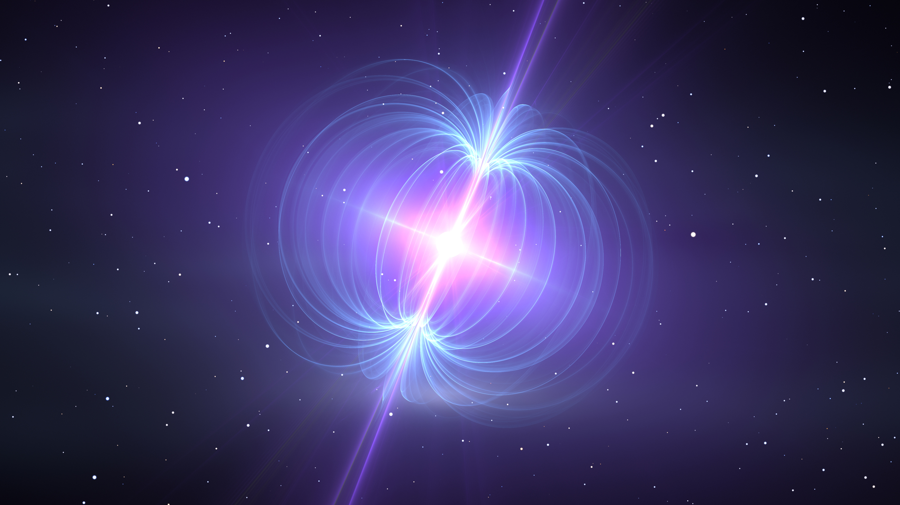

Research
Current Research
Student Researcher · Lu High Energy Transient Group, UC Berkeley
I'm currently working with graduate students Eliza Diggins and Savannah Cary, under the supervision of Professor Wenbin Lu.

Research Description
I study whether an accretion disk—a disk of material surrounding and potentially feeding a star—could explain the infrared emission from the magnetar 4U 0142+61. I build computational models of the disk’s spectrum and compare their predictions with telescope observations, accounting for interstellar dust and instrument filters. Using Bayesian inference and Markov chain Monte Carlo (MCMC), I explore which physical properties are consistent with the data and how well those properties can be constrained.
I spent my summer (2026) reading literature on our current knowledge of magnetars, studying accretion disk physics, and learning about the one-zone disk model.
Research Interests
My broader research interests include anything big and beautiful: black holes, stars, supernovae, and the greater universe and her secrets.